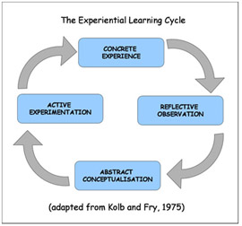
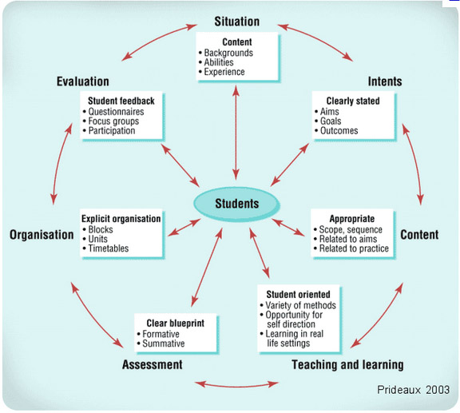

Richard Edbury
Context
Currently I run a recently started course, a BTEC National Diploma in Games Development. The first year the students do the equivalent of one A level, the second year they complete the remaining two. The course is currently 12 hours of subject teaching, 1 hour of tutorial time and 2 hours of official scheduled self study. This is run over three days.
I joined the course shortly after its inception and was largely told, here are your units, these are your hours get on with it. I took over the course after 6 months ready for the start of academic year 2009/2010. The course is taught with one other teacher, an experienced art lecturer with knowledge of games, who covers the art aspects of the course. The budgetary constraints are fairly tight, trips must be paid for by students, visiting lecturers are paid travel at best, small purchases must be cleared, although Games purchasing is relatively accessible. The college does however have fairly state of the art, Mac computers and a good range of software, this is plagued by a bad network and overstretched support it is next to impossible for all the students to play a simple game online simultaneously, and opening and Office application takes about 10 minutes.
There is very little prepared teaching material available in the subject and good academic texts are relatively rare there are however fairly commercial sites and many of the activities such as art and technical IT are well covered.
Students come from a range of backgrounds and abilities, some see it as an easy option rather than getting a job, others see it as a focused path to a chosen career. Almost all come in with excellent office application skills and technical knowhow, the range of art, maths, social skills, common sense and maturity is huge. The majority of students play over 30 hours of games a week, to some it is an addiction which shuts out much of the rest of their lives. Students have often underperformed previously due to disenchantment with their courses or playing too many games rather than working.
The course is the only one of its type for some distance, this means that despite a negative college reputation the course attracts high end students. It also means that despite very poor advertising course numbers are at profitable levels.
The BTEC itself is very wordy, it shares many aspects with courses in media, journalism and TV and film and as there is little crossover, many of these aspects are about management , preproduction and research and have criteria set in a way that it is extremely hard not to set written work. BTEC’s are 100% coursework based; allow for infinite resubmission meaning that a student who works very hard should eventually always get a distinction if they possess any aptitude in the area.
Creating and Developing a Curriculum
This essay covers the planning, design and evolution of the games course. This is a gigantic topic, so certain areas will be covered very briefly and the assumption made that the above context statement is correct and that needs are correctly assessed. The definition of curriculum used is “the planned interaction of pupils with instructional content, materials, resources, and processes for evaluating the attainment of educational objectives.”(Bennett 2010).
During this essay the approach followed will be:
Step 1: Diagnosis of need
Step 2: Formulation of objectives
Step 3: Selection of content
Step 4: Organization of content
Step 5: Selection of learning experiences
Step 6: Organization of learning experiences
Step 7: Determination of what to evaluate and of the ways and means of doing it. (Taba 1962)
In designing a curriculum the needs of those involved must be considered, Southampton City College is a business and as such is primarily concerned with money. Reputation is important and causes the College to make short term unprofitable moves, such as continuing a course when numbers dwindle to unprofitable levels, however this is with the concern that a bad reputation means less students and therefore less money in the future.
The teacher’s needs are also largely centered on money, this isn’t always the case and work conditions and enjoyment do factor in, however normally keeping the college happy keeps the teacher in the job and therefore earning money.
The student in this context generally wants the following (assumptions based on experience):
-
A qualification of as high a standard as possible.
-
The maximum amount of perceived useful knowledge.
-
The minimum amount of personal expenditure.
-
The minimum amount of work. Note this is especially true in Games curriculum planning as the student almost always has something they would rather be doing than a lesson, however well it is taught i.e. playing a game.
-
If work is required, certain tasks are preferable, almost always the more practical the task the more popular it is.
-
To be respected and treated well.
Individual students vary and the work enjoyed and desire for each of the above weighted differently.
In general the needs combine. Money is obtained by passing the maximum number of students, higher grades don’t benefit the college directly but they do improve reputation and hence increase entry. Few drop outs is preferred to massive recruitment as a high dropout rate again effects reputation. To ensure a high retention rate therefore the course aims to keep the students happy.
Referring back to Taba’s step 2 we have three basic aims, to keep students happy, keep costs down and to ensure whilst staying happy they actually at least pass.
To select the content of the course one must adhere to the unit specification as set by Edexcel, Edexcel are the only providers of a recognized games qualification at 6th form level and thus this choice is predetermined.
Over two years the students must complete nineteen units, with seven mandatory units and twelve made up from choices. As the units are designed to fit both into other courses but also to allow a lot of flexibility there is often overlap. This allows us to target one desire of the students that of doing the minimum work needed by maximising overlap and minimising repeated tasks.
By doing this however we cut down on the student’s choice. Generally while students studying games like choice, they like the path of least resistance more. (Doran 2004) says “Quite rightly, there is great emphasis on curriculum flexibility, but there should also be emphasis on curriculum coherence. To ensure that young people make sense of the curriculum, there should be connections between subject, specialism and experiences.” For both these reasons curriculum choices are students make are minimised, but whenever there is an option that doesn’t have much significance to the coherence or effort, it is presented. Also if a student is clearly struggling or adverse to an optional unit alternatives can be provided on an individual basis.
The desire to be practical, the desire to obtain perceived useful knowledge and moral concerns suggest that teaching should not just be aimed at passing the qualification. The government agree, according to the (QCDA 2010) “Curriculum goals must focus on developing the qualities and skills learners need for success in further education and work.”There are often times in curriculum planning where the desire to teach useful skills is counter to the syllabus.
The Edexcel syllabus is frequently maintained and went through a new revision for 2010-2011. Games is however a new area, teaching in the subject has only arrived in the last 10 years and as such Edexcel can’t have employed someone with significant prior teaching experience in the area to build the criteria. The area also changes very fast and as such even with yearly updates the criteria will always be a little out of date. Often the errors are in omission, teaching modding (the process of working with an existing game and modifying it to play in different ways) or level design (both common entry routes) for example can be linked to the syllabus but only tenuously, with only one course provider this could lead to a skill shortage. There is also a heavy skew toward written work which is fairly rare in the industry itself, although it may help prepare for university, even this is unclear as university games courses vary so much and many are vocationally based.
When they rebuild the spec, it seemed a prudent time for suggestions (see appendix 1), this approach having failed, there is a moral question presented, should you teach out of date information? If you do you are arguably wasting students time, if you don’t you are reducing students grades or cheating the marking. A solution to this point is to only cover the outdated information if it is essential, do it by means of a quiz or discussion, just after the teaching has taken place, with only corrections written up (the easiest and most short term memory related method possible), make it clear that the information is outdated and to preserve integrity, teach properly an equal or greater weighting of useful information from outside the syllabus (such as level design).
There are numerous ways to tie the units together, while the method changes yearly based on situations such as teaching classes together for certain periods of the week and the desire to teach fresh material concurrently to both. The current structure arrived upon is: year one planning and design culminating in what is called a design document. Year two creation, focusing on three aspects, a working game (the primary focus), a three dimensional cut scene and level building also in 3D.
Breaking down the curriculum, the start of the course is the part with the most essential requirements. Early on there is a duty to the students and the college to spot if they are on the right course for them, this generally involves an early assignment. There is also pressure to avoid losing people who could complete, the early lessons should therefore foster a good atmosphere, enjoyable well taught lessons and the developing of friendship between the students and respect for the teacher. There are also a range of induction procedures, initial assessments, establishing the basics such as how to use the computers. Finally as room timetabling is often poor at the start of the year, lessons should ideally be flexible as to the room based resources, they require particularly if it involves students computer accounts working as this can also be thwarted by enrolment.
There is a lot of tension here, many goals are conflicting for example initial assessment doesn’t foster a welcoming environment, neither does an early assignment. Work that it is advisable to include at this stage should require low prior knowledge, fosters teamwork, should be obviously relevant and ideally should be enjoyable. This year the starting assignment focused on new technology and research. Both aspects are key to the course, generally students have a reasonable knowledgebase regarding new technologies, this lets students discuss bringing their own knowledge in areas where most are confident. Often they will find out about specific technologies and can then research them further using the Internet. Then for the 3-4th week they are asked to individually hand in their findings.
Unless students are asked to hand in work it can be extremely hard to establish if they are suitable. In computer games development, much of the work is of a nature that it can be hard to tell if a student is working or just doing something they enjoy, some students appear keen up to the moment they are asked for work.
An early assignment also reinforces or highlights errors in the initial diagnostics and helps to steer students towards the right support areas.
Below are current college quality control procedures:
1. Training provision.
2. IFL status.
3. City Vox (student surveys conducted by quality assurance manager).
4. Edexcels external verification.
5. Internal cross marking.
6. Performance reviews.
7. Inspections both internal and external.
8. Complaints procedures.
9. Informal feedback.
10. Managerial monitoring.
11. Teachers and course leaders personal measures.
12. Bench marking.
To start with the government enforces several things, the need to work towards QTLS (Qualified Teacher Learning and Skills) status, a Criminal Records Bureau check, membership of the IFL (Institute for Learning) and occasional Ofsted inspection. While one can teach without some of these things you need to be seen to be working toward them. The government’s intent is that teachers are safe, recording their ongoing training and at the least learning to be good teachers. These factors set benchmarks and with the exception of Ofsted the benchmarks are relatively low, meaning that a good teacher will go further than this in their curriculum.
The relative merits of Ofsted inspections could be debated for a while, most would agree that they serve a fairly essential function of keeping colleges honest. As a quality control measure they carry too much weight and allow colleges enough warning that the situation is not very reflective of normal procedure(post note this changed since). It does along with internal inspections test the ideal state, the theory being if you know what is ideal you can repeat it and if you can’t produce given conducive situation, then you are likely to be failing on a frequent basis.
A long established teacher in a fairly static subject should be able to teach close the Ofsted excellent grade every lesson, unless college circumstances force otherwise. Newer teachers or those facing a rapidly changing or new syllabus are unlikely to be able to do this due to time pressure and that not everything new will work. Ideally curriculum planning should take this into account or risk teacher burnout. This supports students doing their coursework in class, as supervised work is a form of teaching with low preparation time. Other coping methods are to encourage students to teach each other, the research it yourself approach or to just prepare less well. Sacrificing quality is a hard but realistic modern truth with growing class sizes and simultaneous taught lessons becoming common place.
External and internal verification is non-existent, Edexcel insist upon seeing 1/6 units at maximum with 4 students sampled (of the teachers choice). After this rather lackadaisical check is conducted you are welcome to review grades if students resubmit work without re evaluation. Internal verification of marking is optional at City College and is actually hard to institute were you that way inclined as while most teachers would be happy to let you second mark them few if any have time to check others marking even for the very new.
Teachers submit grades to a course leader and while you can check it is unlikely that it would happen so this means that with only 3 pieces of poorly completed work submitted a student could be awarded a distinction assuming the course leader was dishonest. In this situation it is in the interests of the student, teacher and institution for the student to do well and so there is obvious incentive.
Student feedback in many forms is one of the primary quality control measures. A good teacher will ask, plan into the curriculum and act on student feedback. A badly taught course will often result in comments being passed on, through a formal complaint, mentioned to another teacher who acts upon the information, through students making the poor teachers life miserable, through internal feedback. Generally a teacher who doesn’t turn up to lessons is regularly late or is clearly clueless about their subject will be exposed this way. Other behaviour such as overly generous grades may not be caught this way for some time.
Bench marking is a very useful tool over the long term, the trouble is that it is an extremely long term measure. As an example the City College games course has 100% student retention, completion and offers to university. This sounds impressive but closer examination shows that the course started with 5 students and that is the only year completed thus far. While the statistics suggest something is right and probably advise against wholesale changes the sample size is too small to be representative.
Finally the teachers own controls which make up the bulk of the quality assurance. As (Petty 2009 pg 563) says “Like your teaching the courses or subjects you teach should be subject to self corrective feedback; it is the only way they’ll improve.” While this is perhaps too firmly stated the teacher is the one who upon viewing the evidence will make the changes.
(Petty 2009 pg 563) continues to say “Monitoring is the day-to-day checking and improving of a course, making relatively minor changes and improvements.” This process is generally informal although many teachers will make notes on lesson plans to formalise it, while these changes often make very minor differences to the overall course, often they have a bigger impact, a teacher who better develops authority in the class room through constant small changes will probably save a lot of class time lost to misbehaviour over one who maintains status quo. A better explained assignment can often make the difference between a student failing etc.
Self reflection can be undertaken in many ways some formal such as the Kolb cycle below

(Kolb and Fry, 1975 cited in McLean, 2008)
Monitoring can only go so far however, to make the curriculum work self reflection should be used to assess the course structure. Doing this upon project completion or at the end of a term or year are logical points however a good teacher will subconsciously do this constantly. For example the question, are students on track? If not, what should I change to address this? Are ones a teacher will constantly review. Often as the course progresses knowledge about a student will lead to the creation of a differentiated curriculum for that student. For example a curriculum that aims to stretch a student finding the current pace too easy. Assessing the curriculum after an assignment helps as if the students were above or below usual standard and if they were on time should tell you a lot about the previous lessons. In these reviews looking to see if the parts target the overall goal/goals is the main function. Also highly recommended are reviews between the teachers of the course, these serve a similar purpose but can also help to integrate the work, outcomes and ensure consistency.
It is often obvious when a lesson has failed, good practice dictates that every lesson should have a form of assessment, if at the end of a lesson, (or the start of a future lesson) a wide selection student can tell you what they learned then the lesson has probably been taught well.
Another key way for the curriculum to be updated is teacher based research or the availability of new technology. Losing track of industry is a constant fear of full time teachers in games development. Companies themselves are secretive and very few books are written. Industry sites such as Gamasutra, Gamespot, Ars Technica, MCV and Eurogamer are extremely helpful in devising activities to plan the curriculum. Especially useful are industry job adverts, which give a very good guide as to what skills are currently in demand. Finally the students themselves are a great resource as their assignments often contain research which can be followed up on for future years. Teaching updates should also be made teaching has many associated texts and you can steadily read need material to improve teaching. In summery if a teacher is not aware of potential improvements or changes they can be inadvertently teaching incorrect or irrelevant knowledge.
The games course at City College was able to obtain the industry standard 3d software Maya this summer, this opens new avenues to students and changes the curriculum noticeably, this is against the colleges need to save money, but the department often advertises on the back of modern technology and occasional investment makes students feel valued increasing happiness. In the current economic environment it is generally you take what you can get but, prioritising financial expenditure is a key part of curriculum development. Changes particularly to a successful curriculum need to be handled carefully. Too many differences can confuse, annoy or disrupt students and each change should undergo its own quality assurance procedures, both before and after. For example prior to the Maya addition cost/benefits analysis would be performed and subsequently it would be analysed and students questioned to determine if it was having the requisite effect.
To change the curriculum based on financial pressures, currently the games course would need additional staffing, or a new computer room to support more students (every games student needs a computer in the classroom). Supporting an entire full time member of staff is not a realistic target so our current aim is to increase the quality of students. This markets exclusivity and potentially gives a higher customer base should we relax the criteria in the future for a new member of staff. Concurrently the recent government university fees change has created a potential market in cheap HND/HNC provision for the 2012-2013 academic year which is also when the courses first capacity class will graduate. Providing this in addition may enable more staff to be taken on and therefore allow changing of the games curriculum to enable evening classes and flexible timetables.
In conclusion the games course is believed via statistical and feedback information to be successful, but due to the subject’s infancy the course must still evolve significantly on a yearly basis. Evolution is generally as a result of teacher monitoring and student feedback as other quality assurance functions don’t provide much assistance in this area. Further changes are sometimes forced due to economic circumstance, college or government decree or a new purchase. Finally though assumptions about learners needs drive curriculum changes and are constantly being reassessed to ensure the best possible results and service.

References
Bennett, T. 2010. Definition of Terms (online) http://www.doe.in.gov/asap/definitions.html Indiana Department of Education date accessed 20/10/2010.
Doran, M. 2004. A good curriculum needs a childs heart (online) http://www.tes.co.uk/article.aspx?storycode=397874 Times Educational Supplement date accessed 20/10/2010.
QCDA. 2010. Curriculum planning (online) http://www.qcda.gov.uk/qualifications/3716.aspx Qualifications and Curriculum Development Agency accessed 20/10/2010.
Geoff Petty, 2009, Teaching Today: A Practical Guide 4th edition, first published 1993, Nelson Thornes Limited.
Prideaux, D. 2003. pg 268-270 ABC of learning and teaching in medicine British Medical Journal
Taba, H. (1962) Curriculum Development: Theory and practice, New York: Harcourt Brace and World.
McLean, J. 2008 Reflecting on your teaching (online) http://learningandteaching.unsw.edu.au/content/LT/teaching_support/reflecting.cfm?ss=2 date accessed 07/11/2010.
Appendix 1: Edexcels syllabus suggestion response.
Subject |
|
Unit composition of new BTEC national in games development |
|
|
|
|
|
From: (Philip Holmes) |
19/01/2010 01.27 PM |
Richard |
|
From: (Philip Greenwood) |
19/01/2010 01.04 PM |
Your question has been received and will be answered by an Expert shortly. |
|
From: (Richard Edbury) |
18/01/2010 06.49 PM |
I was looking through the spec of the provisional spec of the new BTEC in games development and was hoping to see a unit on Games Level design. Level design/mod design is one of the most common ways to highlight employability skills in the games industry but I feel it is currently being bypassed. |
|